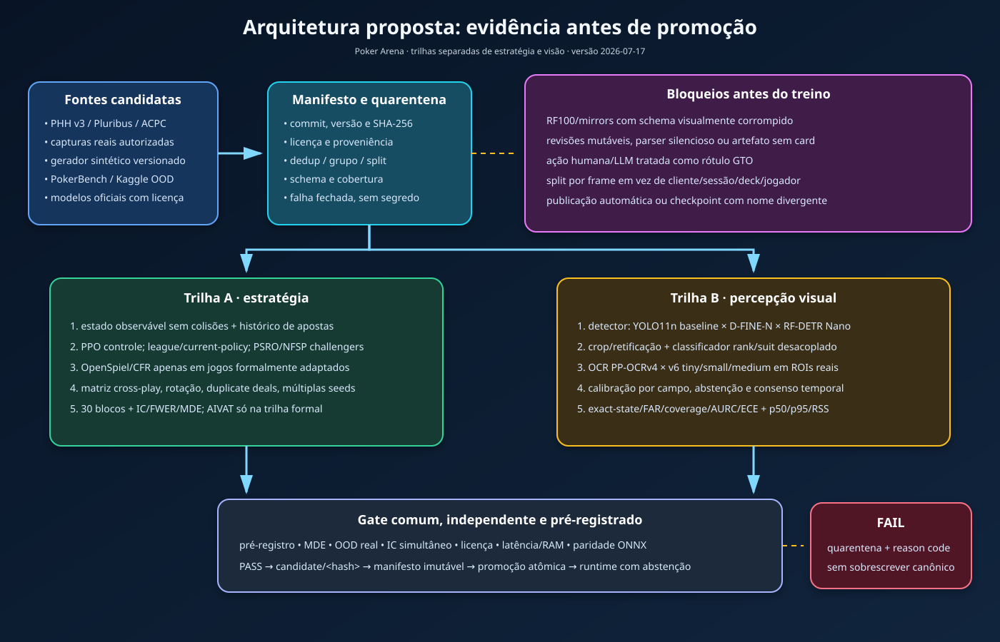

Como a solução enxerga, pensa, joga e prova o que fez.
Você não vai decorar telas. Vai construir um modelo mental: de onde vem a imagem,
como ela vira dados, por que o sistema às vezes se recusa a responder e como tudo
chega ao jogo, ao Copiloto e à auditoria.
A banca mostra uma mesa difícil. O sistema deve saber quando não sabe.
Ao longo do guia, você seguirá a mesma imagem da autorização até a auditoria. Primeiro
tente prever o comportamento; depois confronte sua hipótese com o mecanismo e a evidência.
Reconstruir o pipeline sem consultar o diagrama.
Distinguir proposta visual, gate, abstenção e GO da release.
Diagnosticar uma falha usando sintomas e contratos.
Defender o que foi provado sem extrapolar o escopo.
01
A solução em uma frase
Primeiro a ideia grande; depois os detalhes.
Imagine que você mostra ao sistema a janela de outra aplicação com uma mesa de poker.
O que deve acontecer primeiro: recomendar uma ação ou provar que entendeu a imagem?
O Poker Arena é um laboratório local de Texas Hold’em No-Limit que combina
cinco capacidades: captura supervisionada de uma janela, proposta de estado visual,
validação fail-closed, motor completo de poker e comparação didática de estratégias de IA.
◉
Enxerga
Recebe screenshot ou quadro autorizado e propõe cartas, board, pote, jogadores, posição e stacks.
✓
Verifica
Aplica sanidade, confiança mínima e coerência do estado antes de liberar qualquer conclusão.
♠
Joga
Executa regras de NLHE, bots, ações, side pots, showdown, placar e estatísticas.
▤
Registra
Persiste jogos, mãos, versões, comandos e evidências para auditoria e replay.
Na vida realUma bancada de laboratório mede, verifica, registra e só então interpreta.
≈
No Poker ArenaImagem → estado proposto → gate → resultado ou abstenção → evidência.
Não é um “robô que olha e sempre responde”. É um laboratório que prefere
dizer “evidência insuficiente” a transformar uma leitura fraca em recomendação confiante.
Checkpoint 1: o preflight retorna GO, mas a visão mostra decision_blocked=true. Há contradição?
02
Os cinco modos de uso
A mesma solução muda de papel conforme a pergunta.
▣
1. Captura supervisionada
Observa uma janela própria ou autorizada. O foco é percepção, confiança, latência e abstenção.
♤
2. Jogar contra bots
O humano toma decisões; a interface mostra ações legais, equity, outs, pot odds, EV e painéis auxiliares.
⚗
3. Modo Laboratório
Só bots disputam. Cartas e sinais ficam visíveis para comparar paradigmas e estilos.
✦
4. Copiloto pós-jogo
Revisa um spot descrito, um histórico PHH ou uma imagem. É estudo; não é assistência clandestina.
◫
5. Auditoria
Lista jogos e reconstrói mãos paginadas. É a “caixa-preta” do experimento.
Duelo entre projetos. Um colega abre a própria solução. Você abre o workspace
de captura, recebe autorização, seleciona apenas a janela dele, confirma a prévia e mostra à
banca como seu pipeline propõe um estado — ou se abstém — sem expor o restante do computador.
Se sua pergunta é…
Abra…
Resultado principal
“A visão entende esta tela?”
/?view=capture
Diagnóstico verificável e gate.
“Como é jogar contra as estratégias?”
Arena → Eu jogo
Mesa interativa e ações humanas.
“Como dois cérebros se comportam?”
Arena → Assistir
Instrumentação e estatísticas ao vivo.
“O que eu deveria ter feito naquela mão?”
/?view=copilot
Revisão pós-jogo.
“Consigo provar o que aconteceu?”
Auditoria
Histórico persistido e paginado.
03
Captura supervisionada: duas disposições, quatro portas
Mesmo monitor ou outro monitor; depois autorização, seleção, confirmação e análise.
Tela real — etapa 1. O botão fica bloqueado até existir autorização local explícita.
Porta 1AutorizarO responsável pelo projeto parceiro permitiu a captura e o envio ao backend?
Porta 2SelecionarO navegador abre seu seletor protegido. A escolha não pode ser automatizada.
Porta 3ConfirmarA prévia mostra apenas a janela correta? Ainda não houve upload.
Porta 4AnalisarQuadros reduzidos são enviados sequencialmente ao backend.
SaídaDiagnosticarEstado proposto, motor, confiança, latência, avisos e abstenção.
Mesmo monitor ou outro monitor?
②
Outro monitor (recomendado)
O painel permanece no monitor 1. A janela autorizada, visível e restaurada permanece no monitor 2.
◫
Mesmo monitor
Painel e janela autorizada ficam lado a lado. A fonte não deve ser minimizada nem coberta pelo painel.
Limite honesto da plataforma. O navegador informa se a fonte é
window, monitor ou browser,
mas não entrega à página o número físico do monitor da janela. A escolha temporária de disposição
orienta o operador sem gravar dados da sessão; a fonte efetiva continua sendo confirmada no seletor e na prévia.
Por que somente “Janela”?
Uma tela inteira pode conter mensagens, senhas, prontuários, e-mail ou o código de outra pessoa.
Uma guia do navegador pode mudar de conteúdo. Por isso a interface pede ao navegador uma fonte
window, solicita a exclusão de tela inteira, guia atual e troca posterior,
e ainda bloqueia fontes reportadas como monitor,
browser ou tipo desconhecido.
Pense numa videochamada. Compartilhar “a tela inteira” é como levar todos os papéis
da sua mesa para a reunião. Compartilhar “uma janela” é como mostrar somente a folha autorizada.
Tela real — etapa 3. A fonte foi escolhida, mas nenhum quadro sai antes de “Confirmar e iniciar análise”.
O que acontece tecnicamente após confirmar?
O vídeo fornece um quadro quando há dimensão válida.
Um canvas preserva a proporção e reduz o maior lado para até 1280 px.
O quadro vira JPEG com qualidade controlada.
Uma chamada POST /copilot/from-image leva imagem e contexto manual.
Somente uma leitura fica em voo; isso evita fila crescente de frames velhos.
Se houver falha, o intervalo usa backoff e preserva a última leitura marcada como desatualizada.
Ao encerrar, tracks, upload pendente e sessão remota são cancelados ou revogados.
O teste E2E aguarda mais de um intervalo após selecionar a fonte e exige zero uploads.
Só depois do clique de confirmação ele aceita o primeiro POST /copilot/from-image.
Checkpoint 2: quando o primeiro quadro pode sair?
04
Reconhecimento de imagem: transformar pixels em uma hipótese
A saída é uma proposta estruturada, não uma verdade automática.
Um retângulo branco pode ser uma carta, um botão da interface, um anúncio ou reflexo.
Como evitar que “parece uma carta” vire “é definitivamente Ás de espadas”?
A visão computacional tenta extrair um RecognizedState: cartas privadas,
board, pote, número de jogadores, posição, stacks e confiança reportada. Essa proposta é
separada do motor do jogo e sempre atravessa um gate.
F1 — baseline por template
Usa correspondência visual e regras locais. É simples, rápido e sensível a layout, escala e tema.
F2 — detector ONNX
Prevê cartas, assentos e botão, mas permanece em quarentena enquanto linhagem, licença e validação externa não passam.
F3 — VLM remoto opcional
Pode propor um estado após consentimento separado, redação e sessão efêmera; continua sujeito ao mesmo gate.
É como leitura de placa em estacionamento. A câmera sugere “ABC1D23”.
O sistema sério não abre a cancela só porque seis caracteres parecem plausíveis: ele verifica
formato, confiança, cadastro e contexto antes de agir.
Campo
O que a visão tenta obter
Falhas comuns
Hole cards
As duas cartas privadas do herói.
Sobreposição, corte, verso da carta, fonte diferente.
Board
0, 3, 4 ou 5 cartas comunitárias.
Contagem ilegal, carta duplicada, animação no meio da distribuição.
Pote
Valor agregado da mão.
Confusão com stack, aposta ou texto promocional.
Jogadores
Participantes ativos ou assentos visíveis.
Avatares, assento vazio, nome coberto.
Posição
BTN, blinds e demais posições.
Botão ausente, rotação, mesa heads-up.
Stacks
Fichas por identidade/assento.
OCR, casas decimais, abreviações “1.2K”.
Confiança não é acurácia. “0,91” pode ser um sinal interno alto em um layout
nunca validado. Só um dataset externo rotulado, split sem vazamento e métricas definidas
permite falar em desempenho científico.
Checkpoint 3: uma screenshot retornou HTTP 200 e score interno 0,91. O que isso prova?
05
Gate e abstenção: o “segurança da porta”
Se o estado não é coerente, nenhuma recomendação é emitida.
Segurança de aeroportoDocumento, nome, data e bagagem precisam ser coerentes.
O gate recebe a proposta da visão e verifica invariantes. Se falhar, retorna
proteção aprovada com recomendação suprimida, motivos e avisos. Isso é
o resultado seguro esperado do sistema, não um travamento ou reprovação da release.
Duas decisões parecidas — e completamente diferentes
release_decision=GOO pacote está pronto para a demonstração local.
Depende de árvore limpa, gates, preflight, configuração offline, segurança e evidências do escopo.
vision.decision_blocked=trueEsta leitura não tem autoridade estratégica.
O F1 pode mostrar percepção e diagnóstico, mas suprime a recomendação quando a evidência é insuficiente.
Os dois valores podem — e nesta demo devem — coexistir: release aprovada, recomendação suprimida.
Tela real — proteção aprovada. O motor respondeu, mas o gate não emitiu recomendação porque o estado era insuficiente e incoerente.
O que pode suprimir uma recomendação?
Estrutura ilegal
Duas cartas iguais; board com 1, 2 ou 6 cartas; mais cartas do que o baralho permite.
Campos críticos ausentes
Sem hole cards, pote ou contexto mínimo para a análise solicitada.
Confiança abaixo do limiar
O sistema reconhece que o próprio sinal é fraco e recusa extrapolar.
Fonte ou modelo não promovido
Artefato sem licença, hash, manifesto, linhagem ou holdout válido continua em quarentena.
Exame laboratorial inconclusivo. Um laboratório responsável não inventa um
diagnóstico quando a amostra foi contaminada. Ele pede nova coleta. A abstenção faz a mesma
coisa com a imagem.
A frase cientificamente correta é: “o sistema propôs este estado e o gate permitiu/bloqueou”.
Não diga “a IA provou que esta é a mesa” com base em uma única screenshot.
06
Motor de poker: o árbitro que ninguém pode convencer
A interface pede; o domínio decide o que é legal.
O núcleo implementa Texas Hold’em No-Limit para até nove jogadores. Ele controla baralho,
blinds, botão, ordem de ação, apostas, aumentos mínimos, all-ins, side pots, streets,
showdown, ranking de mãos, ficha ímpar e próxima mão.
Semáforo e guarda de trânsito. Um botão bonito no painel do carro não muda a
regra da via. Do mesmo modo, o frontend pode mostrar “Raise”, mas o backend rejeita valor
ilegal. A regra mora no motor.
PreparaçãoNova mãoRotação do botão, blinds, baralho criptográfico e cartas.
Street 1Pré-flopUTG inicia; big blind mantém opção quando aplicável.
Streets 2–4Flop, turn, riverBurn cards, board e ordem pós-flop.
ContabilidadePotesContribuições, all-ins e side pots elegíveis.
ResultadoShowdownMelhor combinação de 5 em 7 e distribuição.
Três regras que quebram motores ingênuos
1. All-in incompleto não reabre a aposta
Se o aumento não alcança um full raise, jogadores que já agiram podem não recuperar o direito de aumentar. O motor rastreia quem agiu e o tamanho do último aumento completo.
2. Side pots têm elegibilidade diferente
Quem colocou 100 fichas pode disputar uma fatia; quem colocou 1.000 disputa outras. Cada pote precisa saber quais jogadores ainda podem ganhá-lo.
3. Heads-up muda botão e ordem
Com dois jogadores, o botão também posta small blind e age primeiro pré-flop; pós-flop a ordem se inverte.
O motor é coberto por testes determinísticos, invariantes gerativos e cenários diferenciais
contra PokerKit. Isso aumenta confiança, mas não equivale a certificação formal de todas as
variantes possíveis.
07
Os cérebros dos bots: cinco maneiras de decidir
Mesma mesa, estratégias intercambiáveis.
Nível
Como pensa
Analogia cotidiana
Papel científico
Iniciante
Aleatório; escolhe entre ações legais.
Decidir o almoço jogando uma moeda.
Baseline de chão.
Amador
Regras de força, pares, cartas altas, naipe e pot odds.
Receita de cozinha com “se… então…”.
Baseline heurística.
Intermediário
Simula centenas de futuros para estimar equity.
Previsão do tempo por várias simulações.
Baseline matemática.
Adaptativo
Força da mão + leitura estatística do humano.
Vendedor que ajusta abordagem ao comportamento observado.
Exploração controlada.
Expert
Política neural ONNX experimental.
Especialista que só entra se diploma e identidade forem verificados.
Modelo condicionado a promoção fail-closed.
Strategy + Factory: por que isso importa?
Todos os bots cumprem uma interface comum. A Factory recebe o nível e cria a
estratégia adequada. Assim, adicionar um cérebro não exige reescrever mesa, API ou frontend.
Tomada universalA parede fornece o mesmo contrato elétrico.
O painel “como o bot pensou” mostra sinais e critérios implementados. Ele não é prova
de interpretabilidade causal de uma rede neural e não demonstra optimalidade GTO.
Inteligência competitiva: observar sem adivinhar
No Laboratório, cada perfil resume apenas o que aconteceu nesta sessão local.
A pergunta correta não é “qual porcentagem apareceu?”, mas “em quantas oportunidades ela
poderia ter aparecido?”. Uma 3-bet em uma oportunidade é 100% observado, porém ainda é uma
amostra frágil; o sistema se abstém em vez de transformar um caso em personalidade.
Do evento ao perfil. Posição, papel e ordem definem a oportunidade; contagens e incerteza vêm antes de qualquer interpretação.
Denominador primeiro
RFI, 3-bet, defesa de blind e fold diante de aposta só contam quando o jogador realmente teve aquela oportunidade.
Incerteza visível
O painel separa taxa observada, média Beta(1,1), intervalo Wilson 95%, tamanho da amostra e recência EWMA.
Limite de autoridade
O perfil descreve. Não estima cartas privadas, não prova causa, não muda a política do bot e não serve como assistência em mesa real.
Posição do anexo
Pergunta competitiva medida
Limite da leitura
UTG / UTG+1
Abriu, entrou de limp ou respondeu a raise quando teve oportunidade?
A posição não prova força nem revela as cartas.
MP / Lojack
Abriu pote, isolou limper ou continuou diante de raise?
Uma ação não define um estilo permanente.
Hijack / Cutoff / Botão
Qual a frequência de RFI e tentativa de roubo quando todos desistiram antes?
Roubo é um papel observável, não uma recomendação automática.
Small Blind
Abriu blind-versus-blind, defendeu, desistiu ou voltou aumento?
O sistema não prescreve ranges para jogar fora de posição.
Big Blind
Defendeu contra roubo ou contra abertura do SB quando enfrentou raise?
O blind já pago não cria obrigação de continuar.
Qualquer posição elegível
Call, 3-bet, squeeze, 4-bet e agressão IP/OOP, sempre com denominador.
Frequência não identifica intenção, blefe ou causalidade.
Analogia da moeda. Ver uma cara em um lançamento não prova que a moeda sempre
dará cara. Do mesmo modo, “1 sucesso em 1 oportunidade” exige abstenção; posição e papel
explicam o contexto, enquanto o intervalo comunica o quanto ainda não sabemos.
Recuperação ativa: por que o sistema não conclui “agressivo” após uma única 3-bet?
Porque 1/1 tem denominador mínimo, intervalo amplo e alto risco de coincidência. A versão local exige 12 oportunidades para deixar de se abster e só chama a evidência de estável a partir de 30; esses limites são operacionais, não uma lei universal do poker.
Checkpoint 4: qual nível é o melhor comparador para saber se “qualquer lógica” supera o acaso?
08
Copiloto do jogador: professor depois da mão
Três entradas, um princípio: revisar sem inventar.
Spot único
Você descreve cartas, board, pote, stack, posição e adversários. O backend calcula opções e justificativas.
Histórico PHH
Um formato aberto representa a mão inteira. O Copiloto revisa decisões street por street.
Imagem
A visão propõe o estado; o gate decide se existe base segura para continuar.
Professor corrigindo uma prova. Durante a prova, ele não sopra a resposta.
Depois, mostra onde o raciocínio saiu do caminho, quais alternativas existiam e quais dados
sustentavam cada uma.
O que pode aparecer numa revisão?
Equity estimada: fração de cenários simulados em que a mão vence ou empata.
Pot odds: preço do call comparado ao pote após pagar.
EV do call: valor esperado segundo as hipóteses fornecidas.
Outs e projetos: cartas que podem melhorar a mão, com cuidado para outs sujos.
Textura do board: seco, conectado, monotone, pareado e seus riscos.
Opções consideradas: fold, check, call, raise ou all-in conforme legalidade.
Esses valores dependem do estado e das hipóteses. Se número de adversários, ranges ou pote
estiverem errados, uma conta matematicamente correta pode responder à pergunta errada.
09
Frontend: o painel do laboratório
React organiza a experiência; o backend continua sendo a autoridade.
Setup
Consulta níveis realmente disponíveis, escolhe modo, quantidade e cérebros por assento.
Mesa
Renderiza feltro, cartas, posições, stacks, pote, botão e jogador da vez.
Action Bar
Mostra apenas ações legais devolvidas pelo backend e envia comandos versionados.
Painéis de análise
Equity, mão, EV, conselho, raciocínio e perfil conforme o modo.
Modo laboratório
Placar, estilo VPIP/agressão, corrida das fichas e sinais da estratégia.
Ferramentas
Mesa, Auditoria, Posições, Copiloto, Captura e Guia dos Cérebros.
Por que a cadeira não é a identidade?
Pessoas podem mudar de lugar; a identidade não deve mudar com a cadeira. Por isso placares e
vitórias usam player_id. O número do assento é posição visual mutável.
Sala de aula. “Aluno 23” continua sendo a mesma pessoa se mudar da carteira 4
para a 7. Contar notas pela carteira produziria histórico errado.
Acessibilidade e responsividade
Diálogos controlam foco, respondem a Escape e usam semântica ARIA. Botões têm rótulos acessíveis.
A mesa e os painéis se reorganizam em viewport móvel. A captura em página inteira recebe foco
inicial e não fica escondida abaixo do setup.
10
Backend, API e tempo real: a conversa por contratos
FastAPI recebe comandos, valida schemas e publica estado.
Rotas principais
Rota
Papel
Exemplo cotidiano
POST /tables
Cria a sessão e devolve table_id.
Abrir uma nova conta de jogo.
GET /tables/{id}
Lê o estado atual.
Consultar o saldo atual.
POST /actions
Executa fold/check/call/raise/all-in.
Enviar uma transação validada.
POST /step
Avança uma jogada de bot no laboratório.
Avançar um experimento um passo.
POST /next-hand
Inicia a próxima mão.
Abrir novo ciclo de medição.
GET /games
Auditoria paginada.
Extrato bancário por páginas.
WS /tables/{id}/ws
Empurra estado em tempo real.
Placar esportivo ao vivo.
POST /copilot/from-image
Imagem → estado proposto → gate.
Enviar amostra ao laboratório.
Idempotência: “não cobre duas vezes”
Você paga um boleto e a internet cai. O aplicativo não sabe se o servidor recebeu.
Repetir sem proteção poderia cobrar duas vezes. Uma Idempotency-Key
garante que a repetição do mesmo comando devolva o mesmo efeito, não um efeito duplicado.
Versão e conflito 409: “sua cópia ficou velha”
Mutações enviam If-Match; respostas expõem ETag/versão. Se outro evento
mudou a mesa, o backend retorna 409. O frontend relê o estado e exige uma nova decisão humana.
Lista de compras compartilhadaVocê tenta apagar “leite” numa cópia antiga, mas alguém já alterou a lista.
≈
Conflito de versãoAtualize a visão antes de mandar outro comando.
HTTP 400 = ação de domínio ilegal. 404 = recurso inexistente. 409 = versão/idempotência.
413 = upload acima do teto. 415 = MIME inválido ou divergente dos bytes. Imagem multiframe
retorna 400. 422 = contrato do corpo. 503 = dependência ou sessão indisponível.
11
Arquitetura: cozinha organizada, não gaveta de tudo
Dependências apontam para o domínio.

Mapa técnico. Dados e artefatos só chegam ao produto depois de contratos e gates.
engine/ + bots/
Domínio puro: regras, cartas, mesa, observações e estratégias.
application/
Casos de uso: sessão, factory, repository, análise, stats e views.
api/
FastAPI, schemas, mappers, autenticação, REST e WebSocket.
frontend/
React, estado, navegação, captura, visualização e interação.
Cozinha profissional. O salão recebe o pedido, a coordenação organiza, a cozinha
executa a receita. O cliente não entra na despensa para mudar ingredientes no meio do prato.
Clean Architecture protege o domínio do detalhe externo.
Desenhe em 90 segundos. Feche o diagrama e trace quatro caixas:
frontend;
API e mapeadores;
casos de uso da aplicação;
motor de domínio.
Depois desenhe as setas. Se uma regra de poker apontar para React, sua arquitetura mental está invertida.
Padrões usados
Padrão
Onde
Benefício
Strategy
Bots
Trocar o cérebro sem trocar a mesa.
Factory
BotFactory
Criar a implementação pelo nível.
Repository
Sessões
Esconder persistência atrás de interface.
Facade
GameSession
Oferecer uma entrada simples para orquestração complexa.
ACL / Mapper
API ↔ domínio
Evitar que DTO web contamine regra de negócio.
CQRS-lite
Comandos vs views
Separar mudança de estado e leitura.
12
Dados, modelos e ciência: promoção exige passaporte completo
Arquivo encontrado não é modelo pronto para produção.
OrigemDatasetLicença, proveniência, versão, classes e escopo.
MétodoSplitTreino, validação e holdout sem vazamento.
ArtefatoModeloHash, formato, inputs, outputs e classes.
EvidênciaMétricasExact-state, cobertura, abstenção, calibração e latência.
GatePromoçãoManifesto aprovado; caso contrário, quarentena.
Por que o detector F2 está em quarentena?
O arquivo ONNX tem hash, shape e classes inventariados, mas sua linhagem é parcial e a licença
declarada exige revisão. Não há ligação completa entre dataset, seed, split, treino e avaliação
externa. Portanto, o produto conserva o fallback F1 em vez de anunciar F2 como validado.
Remédio sem bula e lote. Mesmo que o comprimido exista e pareça correto, você
não o distribui sem fabricante, lote, validade, composição e ensaio. O manifesto do modelo é a bula.
Métricas que uma tese precisa separar
Métrica
Pergunta respondida
Armadilha
Exact-state
Todo o estado crítico foi reconhecido corretamente?
Média por campo pode esconder combinação impossível.
Cobertura
Em quantas imagens o sistema decidiu?
Acurácia alta decidindo só casos fáceis.
Taxa de abstenção
Com que frequência recusou?
Tratar abstenção como erro simples.
Risco seletivo
Quão errado fica entre os casos aceitos?
Ignorar o limiar de decisão.
Calibração
Confiança prevista corresponde à frequência de acerto?
Chamar score bruto de probabilidade.
Latência p50/p95/p99
Tempo típico e de cauda em hardware declarado?
Usar uma chamada como benchmark.
Screenshot pública sem gabarito demonstra que o pipeline executou; não mede acurácia.
Resultado sintético não prova generalização para mesas reais.
O que a evidência local realmente sustenta
16/16gates do pacote
Testes, tipos, contratos, segurança, dependências, frontend e E2E no snapshot auditado.
5 × 7amostras de latência
Receipt v5 recalculável, P95 máximo 1.774,475 ms para orçamento local de 2.500 ms.
Generalização visual real, GTO, produção multi-tenant e dinheiro real não são alegados.
Os números são um snapshot versionado, não decoração da página. Consulte a cadeia completa de
achado → correção → regressão → limite no
Relatório Omega de auditoria e repita o
preflight antes da apresentação.
Checkpoint 5: o receipt v5 com P95 abaixo do orçamento prova o quê?
13
Segurança e privacidade: confiança em camadas
Local por padrão; perfil público separado e fail-closed.
Loopback
O perfil local escuta em 127.0.0.1. Não deve ser exposto diretamente à internet.
Consentimento local
A captura exige autorização explícita e confirmação da fonte.
CORS, WebSocket e mutações recusam origens não autorizadas/cross-site.
Token
Quando configurado, permanece em memória; não vai para URL nem storage.
Produção
NGINX, TLS, OIDC individual, rate limiting e segredo proxy-backend.
Prédio com recepção. O backend é a sala de arquivos; não deve ter porta direta
para a rua. Em produção, NGINX + identidade + TLS formam a recepção que verifica quem entra,
por onde e quantas vezes.
O que a captura nunca deve fazer
Escolher silenciosamente uma janela.
Enviar antes da confirmação.
Forçar tela inteira ou ignorar fonte ampla.
Conceder VLM remoto por implicação.
Continuar após término da track.
Apresentar estratégia ao vivo no modo acadêmico de captura.
A solução não autoriza uso em plataformas que proíbam assistência em tempo real, nem captura
de terceiros sem consentimento. Conformidade técnica não substitui regra da plataforma ou ética da pesquisa.
14
Quando algo dá errado: sintomas, causas e ação
Diagnosticar sem apagar a evidência anterior.
Sintoma
Causa provável
O que fazer
Botão de seleção desabilitado
Consentimento local não marcado.
Leia e marque somente com autorização real.
“Fonte bloqueada por privacidade”
Tela inteira ou guia selecionada.
Escolha outra fonte na categoria Janela.
Permissão negada
Usuário cancelou ou navegador bloqueou.
Revise permissão e tente novamente.
Prévia congelada
Janela não produz frames ou track terminou.
Mantenha a fonte ativa; selecione novamente.
Abstenção
Estado incompleto, ilegal ou confiança baixa.
Leia motivos; melhore escala/visibilidade; não force.
Última leitura desatualizada
Falha temporária no backend.
Aguarde o backoff; confirme /ready; preserve o diagnóstico anterior.
409 Conflict
Versão da mesa ficou velha.
Frontend relê estado; usuário decide novamente.
503 em /ready
Dependência opcional configurada de forma incompleta.
Corrija configuração ou desative o recurso incompleto.
Três URLs de primeiros socorros
Frontend
http://127.0.0.1:5173/?view=capture
Prontidão
http://127.0.0.1:8000/ready
Swagger
http://127.0.0.1:8000/docs
Use POKER.bat: [1] Iniciar, [2] Parar, [3] Mostrar URLs e abrir no navegador,
[4] Validar. O stop encerra os processos registrados da solução.
15
Roteiro de apresentação: conte uma história, não uma lista
Problema → mecanismo → evidência → limite.
Abertura. “Uma imagem de poker parece simples para nós, mas para o computador
é apenas uma matriz de pixels. Meu trabalho investiga como transformar esses pixels em estado
estruturado sem esconder incerteza.”
0–30 s
Mostre autorização e explique por que só Janela é aceita.
30–60 s
Selecione a fonte e destaque a confirmação sem upload antecipado.
1–2 min
Inicie análise; leia motor, estado, confiança, latência e gate.
2–3 min
Mostre uma abstenção e explique por que recusar é mais rigoroso.
Frases fortes e corretas
“O sistema propõe um estado; o gate decide se há evidência suficiente.”
“Confiança interna não é sinônimo de acurácia.”
“Abstenção é uma decisão de segurança, não ausência de resultado.”
“O motor de poker é independente da interface e valida ações no backend.”
“Modelos só entram após licença, linhagem, contrato, hash e validação.”
Frases que a banca pode atacar
Evite
Prefira
“A IA tem 95% de certeza.”
“O detector reportou score interno 0,95 nesta tentativa.”
“É melhor que todos os modelos.”
“Ainda não existe comparação externa comum que sustente superioridade.”
“Nunca erra porque tem gate.”
“O gate reduz risco e permite abstenção; falsos positivos ainda são possíveis.”
“É GTO.”
“É uma política experimental avaliada sob protocolo declarado.”
Feche a demonstração encerrando o compartilhamento diante da banca. Isso torna privacidade e
ciclo de vida parte visível do experimento, não uma promessa escondida.
Ensine de volta em 90 segundos. Sem olhar para cima, explique para uma pessoa:
por que a captura exige confirmação;
por que a visão produz hipótese, não verdade;
por que abstenção pode coexistir com GO;
qual evidência ainda falta para falar de generalização.
Se uma das quatro respostas depender da frase “porque a IA decidiu”, volte ao capítulo correspondente.
16
Glossário, flashcards e mapa final
Recuperar a ideia fixa mais do que reler.
Gate
Conjunto de verificações que libera ou bloqueia uma conclusão com base no estado proposto.
Abstenção
Resposta explícita de evidência insuficiente ou incoerente.
Equity
Estimativa da parcela de vitórias/empates sob adversários e hipóteses definidos.
Idempotência
Repetir o mesmo comando com a mesma chave não repete o efeito.
ETag / If-Match
Contrato de versão que impede mutação sobre uma cópia velha.
PHH
Formato aberto e estruturado para histórico de mãos de poker.
Holdout
Conjunto separado que não participa da escolha/treino e estima generalização.
Risco seletivo
Erro entre os casos que o sistema decidiu aceitar.
WebSocket
Canal persistente usado para empurrar estado da mesa em tempo real.
GO da release
Aprovação do pacote para o escopo local supervisionado; não concede autoridade estratégica à visão.
Receipt
Evidência versionada ligada a código, cenário, ambiente, amostras e prazo; prova somente o claim declarado.
Se lembrar de quatro verbos…
Autorizar
Propor
Verificar
Registrar
Se lembrar de quatro limites…
Confiança não é acurácia
Screenshot não é benchmark
GO local não é generalização visual
Frontend não é autoridade de regra
Checkpoint 6 — desafio final: qual sequência representa melhor a solução?
Modelo mental final: o Poker Arena é um laboratório verificável. A visão propõe,
o gate protege, o motor arbitra, os bots experimentam, o frontend explica e a auditoria preserva.
Página educacional original do projeto Poker Arena. Metodologia baseada em aprendizagem ativa,
recuperação, analogias, contraste, feedback e múltiplas representações, inspirada no formato
visual, orientado a tarefas, histórias, perguntas e exercícios descrito pela
série Head First da O’Reilly.
“Use a Cabeça” é referência metodológica, não afiliação, reprodução textual ou edição oficial.